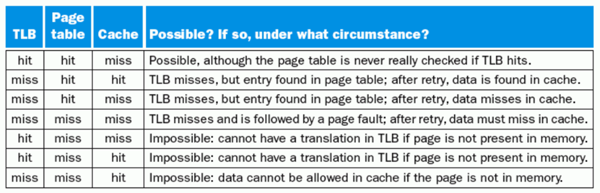

Speed and Size¶
约 2625 个字 46 张图片 预计阅读时间 13 分钟
处理器速度 <= 高度相关 => 寄存器速度
Memory Technology¶
SRAM¶
- value is stored on a pair of inverting gates 两个反相器
- very fast but takes up more space than DRAM

DRAM¶
- Value is stored as a charge on capacitor 电容器
- Very small but slower than SRAM (factor of 5 to 10)
- Must periodically be refreshed 必须定期刷新
- Read contents and write back (destructive read) 破坏性读取
Bits in a DRAM are organized as a rectangular array
DRAM accesses an entire row
Burst mode: supply successive words from a row with reduced latency (SDRAM)
从一行中连续读取比较快
高速的口一般是串行的，接口很少 <== 保证多条线同时到达目标
Flash¶
Nonvolatile semiconductor storage 非易失半导体
只能从1写到0，擦除代价大
- NOR flash: bit cell like a NOR gate
- Random read/write access
- Used for instruction memory in embedded systems
- NAND flash: bit cell like a NAND gate
- Denser (bits/area), but block-at-a-time access
- Cheaper per GB
- Used for USB keys, media storage, …
- Flash bits wears out after 1000’s of accesses
- Not suitable for direct RAM or disk replacement
- Wear leveling: remap data to less used blocks
Disk¶

访问时间的计算：

- 每次读取一个sector扇区的数据
Memory Hierarchy Introduction¶
locality
- Temporal locality 时间局部性
- Items accessed recently are likely to be accessed again soon
- e.g., instructions in a loop, induction variables
- Spatial locality 空间局部性
- Items near those accessed recently are likely to be accessed soon
- E.g., sequential instruction access, array data
-
Copy recently accessed (and nearby) items from disk to smaller DRAM memory Main memory 主存
-
Copy more recently accessed (and nearby) items from DRAM to smaller SRAM memory Cache memory attached to CPU 缓冲
cache 在CPU内部
概念

Block: unit of copying 搬运的最小单位 可能是一个word或者多个word-
Hit: If accessed data is present in upper level 两层：从硬盘到内存，从内存到cacheHit Time: The time to access the upper level of the memory hierarchy, which includes the time needed to determine whether the access is a hit or a miss.Hit ratio: hits/accessesMiss: block copied from lower levelMiss ratio: misses/accesses = 1 – hit ratioMiss penalty: The time to replace a block in the upper level with the corresponding block from the lower level, plus the time to deliver this block to the processor. 把数据从底层拿到高层，之后再传给processor

The basic of Cache¶
SRAM and DRAM (main memory)
Direct mapped¶

(Block address) modulo (Number of blocks in the cache)
固定的位置 $\text{(Block address) \% (Number of blocks in the cache)} $
Tag 区分存放的哪个数据
- Store block address as well as the data
- Actually, only need the high-order bits
Valid Bits 这个Block是否为空
Valid bit: 1 = present, 0 = not present 最初设置为0
Cache Block Address

example

理解cache中的各个位

上面的部分是 Memory address（Tag + Index)，下面的才是cache中的(这里Cache Address就是它的索引Index)。这里每一个Block有四个word，需要两位来定位word，每个word有四个字节，需要两位来定位byte，故而Byte offset = 4
index 在cache中寻找block，其大小由cache size决定
Offset 用于去在data中寻址。注意寻址方式，一般是字节寻址，但是很多题目会是word寻址，同时也看清楚给的地址是以字节址还是Word。比如，一个 4-word blocks，就需要 index 先去寻找block，再由offset分别确定word和byte，故需要4bit
一个cache slot实际的size是 data size of a block + Tag + Valid，但是提及某个cache大小时，都是只计算Data部分
Tag 由 memory address 减去 Index、Byte Offset计算
Total cache size: Block num(2^n) * (data size + tag size + valid bit)
计算
cache的命名不考虑标签和有效位的大小，只考虑数据的大小
example


Handling Cache reads hit and Misses
Read- Read Miss 暂停处理器，直到从内存中返回数据
- instruction cache miss
- data cache miss
- Read Miss 暂停处理器，直到从内存中返回数据
detail
1. Send the original PC value (current PC-4) to the memory.
2. Instruct main memory to perform a read and wait for the memory to complete its access. (in multiple cycles)
3. Write the cache entry, putting the data from memory in the data portion of the entry, writing the upper bits of the address (from the ALU) into the tag field, and turning the valid bit on.
4. Restart the instruction execution at the first step, which will refetch the instruction again, this time finding it in the cache.
-
Write hits不同的写策略 详细内容见后-
write-back: Cause Inconsistent Wrote the data into only the data cache
-
write-through: Ensuring Consistent
-
-
Write Miss
Deep Concept¶
引入

1-word block

Block Placement¶

Fully Associative¶
Block can go anywhere in cache
Set Associative¶
Block can go in one of a set of places in the cache.
A set is a group of blocks in the cache.
Block address MOD Number of sets in the cache 也就是针对上面的index在这里会是set index
If sets have n blocks, the cache is said to be n-way set associative. 注意这里是一个组有n个Block则称之为N-way set而非 n 个set
Block identification¶
基本相同

Block replacement¶
Random replacement- randomly pick any block
Least-recently used (LRU)- pick the block in the set which was least recently accessed
Assumed more recently accessed blocks more likely to be referenced again
This requires extra bits in the cache to keep track of accesses.
First in,first out(FIFO)- Choose a block from the set which was first came into the cache
Write Strategy¶
write hit
- If the data are written to memory, the cache is called a write-through cache
- Can always discard cached data - most up-to-date data is in memory 在Disk中总是最新的数据
- Cache control bit: only a valid bit
- memory (or other processors) always have latest data
- 读取miss不会影响write
- If the data are NOT written to memory, the cache is called a write-back cache
- dirty page 存在,不能直接discard
- Cache control bits: both valid and dirty bits 多了Dirty bit
- much lower bandwidth, since data often overwritten multiple times
这两种策略，都会使用Buffer。
Write-Through 使用Buffer是为了降低不断写回下一层的cost，使用的是下面的 Write Buffer，数据写入Cache的同时，也写入buffer
Write-Back 也有写缓冲，Buffer
Write stall
When the CPU must wait for writes to complete during write through
Write buffers
- A small cache that can hold a few values waiting to go to main memory.
- This buffer helps when writes are clustered.
- 如果一次写入的量很大，很可能超过buffer的容量

- 增加了数据访问的复杂度，需要检测数据是否在write buffer中，否则并行的IC数据访问读取的是旧数据
Write miss
看是否写回到cache中去
- **Write allocate **
The block is loaded into the cache on a miss before anything else occurs.
- **Write around (no write allocate) **
- The block is only written to main memory
- It is not stored in the cache.
- In general, write-back caches use write-allocate , and write-through caches use write-around.
Designing the Memory system to Support Cache¶

对主存的加速。单纯的One-word-wide架构，由于对DRAM取数据很耗时，会造成很多时间浪费
概念
Bandwidth 带宽，是一个时钟周期能访问的Bytes数目 $Bandwidth = \frac{Bytes}{CLK}$
miss penalty 移动一个Block的代价
example

增大 Memory 位宽

如果位宽增加，单位时间内传输的Block数目增加
增加Memory数量（类似并行
4 banks Interleaved Memory

但是bus的位宽没有变化，导致通过bus传输数据需要等待
Measuring and improving cache performance¶
The main contents are the following:
- Measuring cache performance
- Reducing cache misses by more flexible placement of blocks
- Reducing the miss penalty using multilevel caches
$$ \text{Average Memory Assess Time (AMAT) = hit time + miss time}\ \text{= hit rate × Cache time + miss rate ×memory time} $$
Measuring¶
我们使用CPU Time来衡量 how good it works
$$ {CPU Time} = \text{CPI * I * CPU cycle time} \ =\text{CPU Excution Time} + \text{CPU Memory-stall Time} $$
$$ \text{CPU Memory-Stall Time} = \text{Read-stall+Write-stall}\ = #of instructions\text{ * miss ratio * miss penalty} $$
For Read
$\text{Read-stall} = \frac{Read}{Program}*\text{Read miss rate * Read miss penalty}$
For Write
$Write-stall = \frac{Write}{Program}*\text{Write miss rate * Write miss penalty} + Write Buffer$
- If the write buffer stalls are small, we can safely ignore them .
- If the cache block size is one word, the write miss penalty is 0.
- 通常情况下都可以忽略 <== 设计的较好的CPU一般不会满
一定要注意Write的类型，针对write hit
Write-through Write-back
还有miss的应对
Write-allocate Write-around
计算

- Miss
- Instruction miss
- Data miss
Improving¶
- 提高命中率
- 减少 miss 代价
映射 Block Placement¶
- 相联度和容量不是相互独立的


Tag计算

主存中的Block Address = Index + Tag

前面已经写的比较详细了
Decreasing miss penalty with multilevel caches¶
Add a second level cache:
- often primary cache is on the same chip as the processor 一级缓存在处理器的芯片上
- use SRAMs to add another cache above primary memory (DRAM)
- miss penalty goes down if data is in 2nd level cache
一级和二级的cache关注的目标不同：
- 一级 hit time，降低失效代价
- 二级 miss rate 相联度更高
如果第一级的cache失效，就会访问第二级的cache，如果成功，那么第一级的penalty就是第二级的访问时间；... (这里有点疑问)
例题


- Main Memory 的失效代价：访问Main Memory 的时间
- 总CPI = 基准CPI + 各级代价 注意计算的是什么单位
Local/Global miss rate

实际做题的时候,有时候算L2-cache失效的CPI需要在第一级失效的基础上进行计算,那时候第二级的miss rate实际上就是local miss rate
Virtual Memory¶
Main Memory act as a “Cache” for the secondary storage.
Translation of a program’s address space to physical address
Motivation:
- Efficient and safe sharing of memory among multiple programs.（多个Va映射到同一个Pa）
- Remove the programming burdens of a small, limited amount of main memory.

Larger number of virtual pages than physical pages 现如今不再是这样
- 个人设备中，通常是DRAM和闪存充当两级存储层次结构
- illusion of having more physical memory
- program relocation
- protection
Page faults | 缺页¶
The data is not in memory, retrieve it from disk
- huge miss penalty, thus pages should be fairly large (e.g., 4KB)
- reducing page faults is important (LRU is worth the price)
- can handle the faults in software instead of hardware 通过软件解决缺页问题 Cache是硬件
- using write-through is too expensive so we use write back 同时写到硬盘和主存代价太大

Page Table | 页表¶

Page Table 包含了所有的对应关系,不需要Tag
- Page offset 计算：由整个Page size决定， = log(Page Size)
页表指针 Page Table Register
- 在Memory中存储 indexed by the virtual page number
- Each Entry in the table contains the physical page number for that virtual pages if the page is current in memory, 即使不在Main Memory中,也会保留一个物理地址(In Disk)
- Page table, Program counter and the page table register, specifies the state of the program. Each process has one page table. 如果转换进程，要保存当前进程的状态 包括 页表、程序计数器、寄存器
- 操作系统只分配物理内存地址，不保存页表。
- Each program has its own page table 每一个进程有自己的页表。
-
Size

- Virtual Address - Page Offset = #bits(Virtual Page Number)
操作系统 OS
- When the OS creates a process, it usually creates the space on disk for all the pages of a process.
- When a page fault occurs, the OS will be given control through exception mechanism.
- The OS will find the page in the disk by the page table.
- the OS will bring the requested page into main memory. If all the pages in main memory are in use, the OS will use LRU strategy to choose a page to replace
Virtual Address
- virtual page number
- Page offset
Write
- use write-back strategy. To do so, the machines need add a dirty bit to the entry of page table.
- The dirty bit is set when a page is first written. If the dirty bit of a page is set, the page must be written back to disk before being replaced.
TLB¶
相当于Page Table的一个cache
- Without a TLB, almost every memory access would require two accesses to RAM: An access to the page table, followed by an access to the requested data.

- 使用Page Table中的Valid标记是否在主存中
- TLB一般采用全相联
- 硬件/软件处理失效，大多数MIPS使用软件

Combination of Miss

例题¶
Note
大部分地址都是从00开始的，别忘了0的地址。
- 计算
- cache
- cache的size
- 多重cache的performance measure
- Virtual Memory
- Page Table、TLB 是如何work的，可能要给出流程
- Page Table 的size
- cache
Write back / through概念¶


- If all blocks in the higher level cache are also present in the lower level cache, then the lower level cache is said to be inclusive of the higher level cache.
- If the lower level cache contains only blocks that are not present in the higher level cache, then the lower level cache is said to be exclusive of the higher level cache.

Answer

5.6.2 And the result written to L2, may update it in L2, and then tag it dirty.
5.6.3
Cache 计算¶

instruction access, data access
$\text{Total CPI = Base + Instruction miss + Data miss}$
TLB¶

- TLB 中的 Tag 、Index（当组相联）
替换策略¶

two-way set associative cache with four one-word blocks
两组
每组两个block
408¶


- Page size 4KB => Page Offset = 12
- Virtual Size 4GB = > virtual address 32 bits
- Virtual Page Number 20 bits
- 注意进制